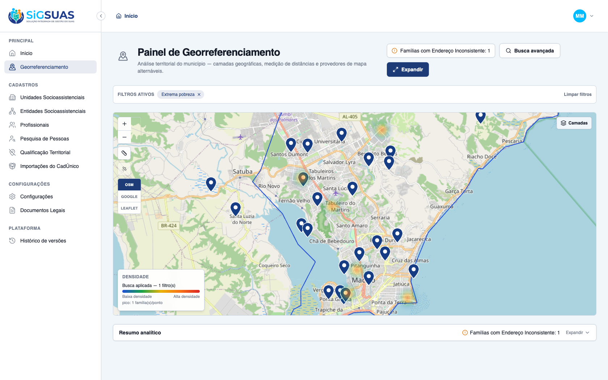
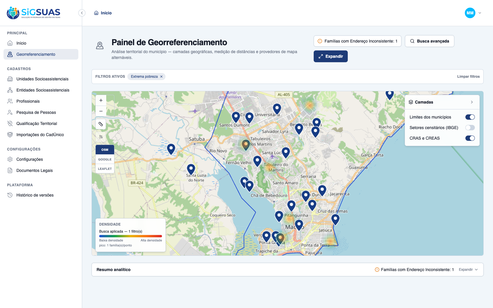
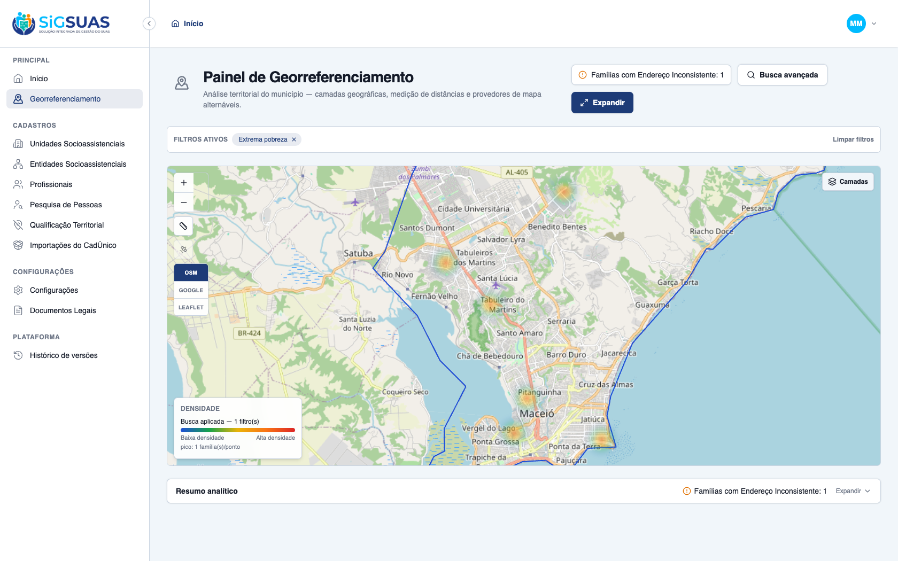

O critério de aceite da HU #9866 sobre o alternador da camada de infraestrutura (CRAS/CREAS) foi verificado dirigindo o app real no navegador e reforçado pela suíte automatizada — ATENDIDO. Pré-requisito de dado: foi criado o seeder MaceioSocialUnitsSeeder que popula as 25 unidades oficiais de Maceió (20 CRAS + 5 CREAS, coordenadas WGS84 das páginas da Prefeitura) no tenant Maceió Geo, cada uma geocodificada (addresses_geometries POINT ativo, reusando o UpsertAddressGeometryAction). CA09: com o filtro de Extrema pobreza aplicado (manchas de calor no mapa), ao ativar o seletor da camada builtin "CRAS e CREAS" (Unidades de Atendimento), o sistema plota os 25 marcadores fixos nos prédios físicos dos CRAS/CREAS — permitindo confrontar visualmente onde o serviço está instalado com as manchas de adensamento de risco; ao desligar o seletor, os marcadores somem (alternador liga/desliga). O endpoint client/geo-panel/social-units retornou 200 com os 25 pontos. Cobertura automatizada: Pest "serves the tenant social units as anonymous points with type_code (RN09)" (53 testes/190 asserções) + Vitest useGeoPanel (camada de unidades, 24 testes).
| CA | Critério | Status |
|---|---|---|
| CA09 | Exibição das unidades existentes (alternador CRAS/CREAS) | ATENDIDO · navegador |
Critério (Gherkin): Dado que apliquei o filtro de extrema pobreza e visualizo as manchas de calor, Quando ativo o seletor de "Unidades de Atendimento", Então o sistema plota marcadores fixos indicando onde estão localizados os prédios físicos dos CRAS e CREAS atuais do município.
Como foi testado: Pré-requisito: rodado o seeder MaceioSocialUnitsSeeder (25 unidades — 20 CRAS + 5 CREAS — geocodificadas no tenant Maceió Geo). No painel, aplicado o filtro Extrema pobreza (manchas de calor) e, na barra Camadas, ativado o seletor CRAS e CREAS (Unidades de Atendimento); em seguida desativado para contraste.



=== appendix: backend + frontend ===
--- Pest: social units servidos como pontos anônimos (RN09) ---
✓ it aggregates by sector, groups anonymous points and computes the b… 0.02s
✓ it serves the tenant social units as anonymous points with type_cod… 0.02s
Tests: 53 passed (190 assertions)
--- Vitest: useGeoPanel camada de unidades (pontos) ---
✓ src/modules/geo-panel/composables/useGeoPanel.test.ts (24 tests) 7ms
Test Files 1 passed (1)
Tests 24 passed (24)
Duration 522ms (transform 49ms, setup 9ms, collect 58ms, tests 7ms, environment 259ms, prepare 47ms)